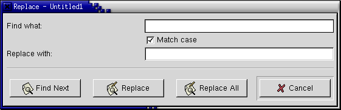

Replace Dialog

Find What:
Type the word you want to find in this box. This is the search string. The command searches for the string of letters or numbers that you type, so if you search for "in", you will find the middle two letters of "find", as well as the word "in".
Match case
This checkbox determines whether the string you are looking for must have the same combination of capital and lower case letters as the search string. If this box is selected, then "In" will not match "in". If it is not selected, "in" matches "In", "IN", "in", and "iN".
Replace with:
Type the characters you want to use as replacements in this box. You may put nothing in this box, in which case the replacement will simply delete the text you found. This is the 'replacement string'.
Find Next
Clicking on this button will find the next occurrence of the search string in the document. AbiWord starts searching from the insertion point, and wraps round to the beginning of the document once the end is reached. The search stops when the whole document has been searched once.
Replace
This button replaces the currently selected instance of the search string with the replacement string, and moves to the next occurrence of the search string following the inserted replacement string. (This ensures that the process does not get stuck if the replacement string includes the string you are replacing.) If you click this button before clicking Find Next, it simply finds the next occurrence of the search string.
Replace All
This button searches the whole document and replaces all occurrences of the search string with the replacement string. Be careful using this feature. For example, if you wanted to replace all instances of 'flat' with 'apartment', this button would convert the sentence 'He spoke flatly.' to 'He spoke apartmently.'
Cancel
This closes the Replace dialog.